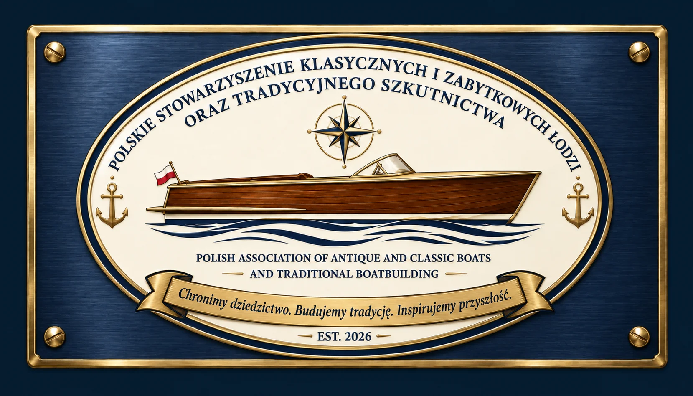

Dziedzictwo
Chronimy autentyczność jednostek i dokumentujemy ich historię.
POLSKIE STOWARZYSZENIE KLASYCZNYCH I ZABYTKOWYCH ŁODZI
Cyfrowy katalog klasycznych i zabytkowych łodzi: historia modeli, konstrukcja, oryginalne i typowe fabryczne silniki, lata produkcji, profile kolekcjonerskie oraz wyszukiwanie aktualnych ofert na rynkach polskich, skandynawskich, europejskich i północnoamerykańskich.

01 · STOWARZYSZENIE
Polskie Stowarzyszenie Zabytkowych i Klasycznych Łodzi oraz Tradycyjnego Szkutnictwa powstaje w Szczecinie jako otwarta społeczność właścicieli łodzi, szkutników, rzemieślników, żeglarzy, historyków i wszystkich osób zainteresowanych morskim dziedzictwem.
Chronimy dziedzictwo. Budujemy tradycję. Inspirujemy przyszłość.
NASZA MISJA
Każda klasyczna łódź niesie historię ludzi, miejsc i rzemiosła. Chcemy, aby te historie nie znikały, lecz żyły, pływały i inspirowały następne pokolenia.
Chronimy autentyczność jednostek i dokumentujemy ich historię.
Promujemy tradycyjne techniki szkutnicze i odpowiedzialną renowację.
Dzielimy się wiedzą przez warsztaty, szkolenia i spotkania.
Łączymy pasjonatów, ekspertów, instytucje oraz partnerów z Polski i zagranicy.
NASZE CELE
WIZJA DLA SZCZECINA
Długoterminowym celem jest stworzenie przestrzeni renowacji, nauki, ekspozycji i międzynarodowej wymiany wiedzy, rozpoznawalnej w Polsce i Europie.
CYKLICZNE WYDARZENIE
Planujemy święto klasycznych łodzi i kultury morskiej z paradą jednostek, pokazami rzemiosła, spotkaniami z ekspertami i programem dla rodzin.
DOŁĄCZ DO NAS
Nie trzeba posiadać klasycznej łodzi ani być zawodowym szkutnikiem. Liczą się ciekawość, szacunek do dziedzictwa i chęć wspólnego działania.
02 · KATALOG
Wybierz kraj, a następnie konkretny model lub typ. Każda pozycja zawiera zdjęcia referencyjne, rozbudowaną historię, cechy rozpoznawcze, oryginalne lub typowe fabryczne silniki oraz ocenę kolekcjonerską PSKL: popularność ⭐ 1–5 i trudność zdobycia ⭐ 1–5. Przy modelach produkowanych przez wiele lat podano warianty silników zależne od rocznika i wersji.
03 · OFERTY
Oferty zaznaczone w wyszukiwaniu są zapisywane tutaj do dalszego śledzenia, porównywania i analizy. Każda zachowuje nazwę portalu, z którego została znaleziona, oraz bezpośredni link do oryginalnego ogłoszenia.
Brak obserwowanych ofert. W zakładce „Szukaj” zaznacz ✓ przy interesującej pozycji.
04 · WYSZUKIWANIE OFERT
Ustaw frazę, materiał i kraj, a następnie naciśnij „SZUKAJ”. Pasujące zapisane oferty pojawią się poniżej. Indeks PSKL obejmuje część rynku; data odczytu i dostępność źródeł są podane przy wynikach. Aktualne wyniki można też otworzyć bezpośrednio w portalach. Każdy wynik pokazuje źródło (np. OLX, Blocket, FINN.no, Boat24) i zawiera bezpośredni link do konkretnego ogłoszenia. Zaznacz ✓ Obserwuj ofertę, aby zapisać ją w zakładce „Oferty” do dalszego śledzenia i analizy.
Ustaw kryteria i naciśnij „SZUKAJ”.
05 · KSIĘGA ZAŁOŻYCIELSKA
Księga Założycielska opisuje misję, wartości, cele, strukturę i kierunek rozwoju Stowarzyszenia. Jest widoczna publicznie, aby każdy mógł poznać fundamenty oraz założenia organizacji.
06 · DANE KONTAKTOWE
Założyciel
Polskie Stowarzyszenie Zabytkowych i Klasycznych Łodzi oraz Tradycyjnego Szkutnictwa